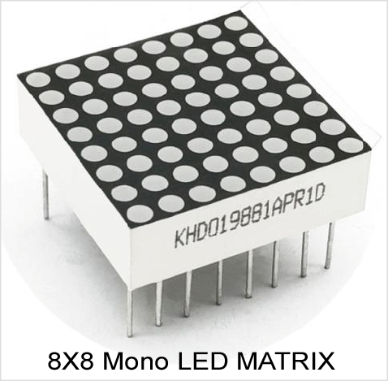
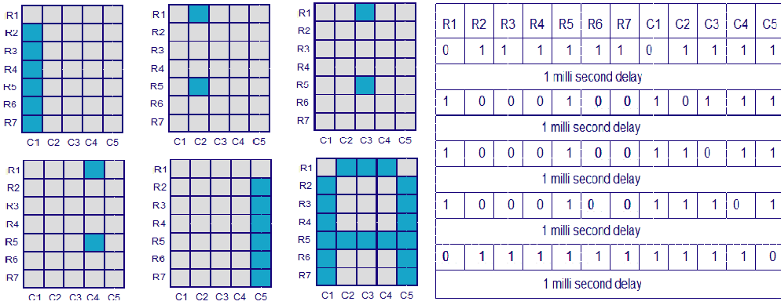

LED Matrix module have many applications in real life,
such as various types of electronic display panels.
Most modern LED sign boards uses various types of matrix boards with controllers.
In this tutorial we are going to interface a single color 8×8 LED matrix with a
Microcontroller and display a few characters in it. LED dot matrix can be used
in simple display applications where the resolution is not a big concern.
Hardware Discussion : LED Dot Matrix

Fig: LED DOT Matrix Display
LED Matrix Features :
Available in different sizes and colors.
Robust usability. It has long life almost 50,000 hours if properly installed.
It is called solid state lighting because it is made of solid state material with no tube no filament of bulb to break.
It is environmentally friendly because it has no mercury or any other hazardous material.
Its brightness and colours can be easily controlled.
It is more efficient because now it is capable of outputting 135 lumens/watt.
Low resolution
We can understand it in size and types, e.g. 5x7, 8x8, common anode, and common cathode type.
With low-voltage scanning, 8×8 LED Matrix LED display have advantages such as power saving, long service life, low cost, high brightness, a wide angle of view, long visual range, waterproofs and so on.
LED matrix display is device used for displaying the information on machines like computer monitor, tvset, Medical Monitors etc.
LED Matrix Basics
Fig: LED Matrix Pin Out
An LED dot matrix display consists of a matrix of LED’s arranged in a rectangular
configuration. An 8×8 matrix consists of 64 dots or pixels. There is a LED for each
pixel and these LEDs are connected to total of 16 pins. It can be used to display
almost anything by switching ON /OFF a desired configuration of LED’s. You can
identify the pin out and circuit diagram of it using the following figure.
The dot matrix display has 64 LEDs and evenly grouped into 8 columns and 8 rows.
Any individual LED or a group of LEDs in the matrix can be activated by switching the
required number of rows and columns. For example, in the above figure if Row1 is made
high and Column1 is made low, the top left LED (address R1C1) will glow.
How LED Matrix Works ?

Fig: Step by Step LED Matrix Drive
As a demonstration, lets see how we can display letter “A” using the display.
The tables given below shows the logic levels at each pin for displaying A. In
the above diagram you can see that only one LED in a row will be ON at a time
but any number of LEDs in a column can be ON at a time. That means the
microcontroller’s port pin can directly drive a row but it requires additional
circuit for driving the column lines.
Circuit Diagram :
Fig: Interfacing LED Matrix with 8051
Circuit Discussion :
First setting up the matrix circuit, as per the connection given in the
picture diagram. The circuit is very simple one if you clearly understood
the previous lessons.
At sometime or another you may run out of pins on your Microcontroller and need to extend it.
The common solution for this is to use a Shift Register
And the 74HC595 shift register (nicknamed ‘595’) is one of the most famous among all.
In this lesson you will learn how to expand your I/O pins using a shift register.
Fig: Pin out with functional diagram of 74HC595
74HC595 Features :
High speed CMOS device. 8-bit, Serial In – Parallel out Shift register.
Maximum low-level Input Voltage: 1.35V @(Vcc=4.5V)
74HC595 Pin Description with functional diagram :
Fig: Pin Description functional diagram of 74HC595
How 74HC595 Works?
The 595 can be controlled using only three pins of 74HC595:
Clock Pin (pin 11)
Latch Pin (pin 12)
Data Pin (pin 14)
The 595 has two main registers as shown in the figure:
The shift register.
The output register (or data latch or sometimes called a register latch).
Whenever we apply a clock pulse to a 595, two things happen:
The bits in the Shift Register move one step to the left. For example, Bit 7 accepts
the value that was previously in bit 6, bit 6 gets the value of bit 5 etc.
Bit 0 in the Shift Register accepts the current value on DATA pin. At the rising
edge of the pulse, if the data pin is high, then a 1 gets pushed into the shift
register. Otherwise, it is a 0.
The 74HC595 is arranged this way, so, when you update the shift register data using
the serial clock (SRCLK) and serial data (SER) inputs, the outputs from the chip do
not change .i.e. you can feed data into the shift register and it will ripple
through without affecting the output pin state. Only when the output data clock
is strobed (latch clock or register clock - RCLK) will the data be transferred
from the shift register to the output pins.